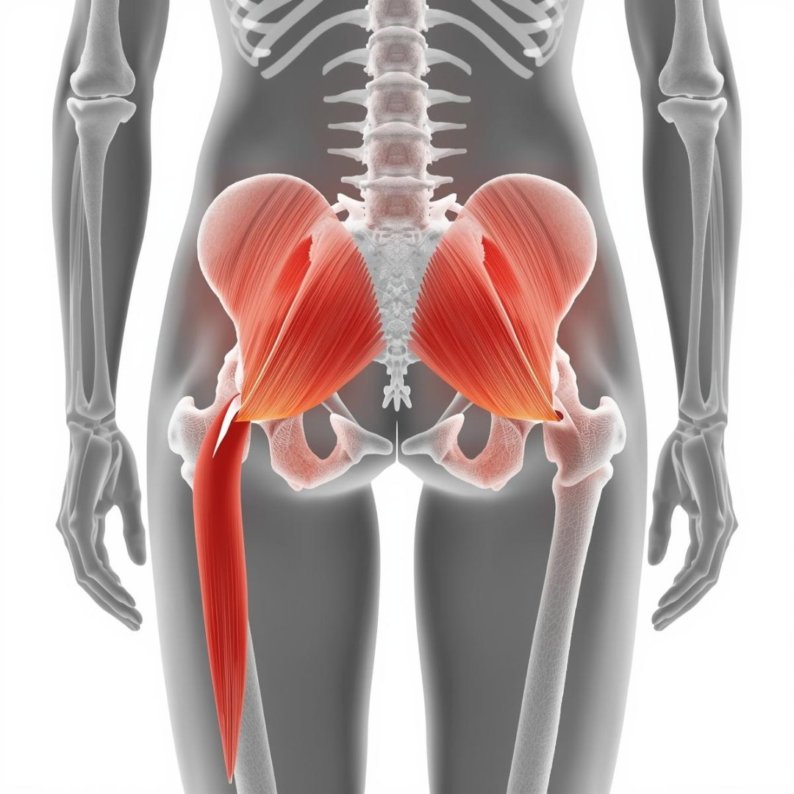
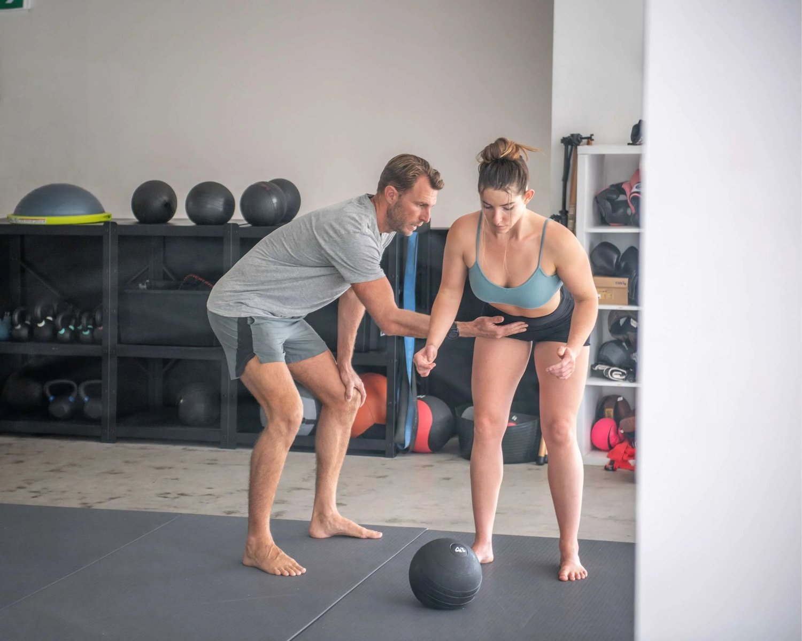
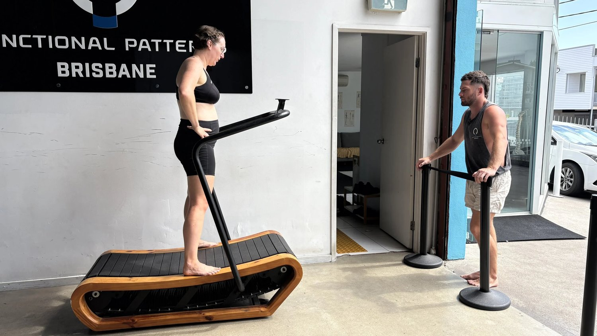
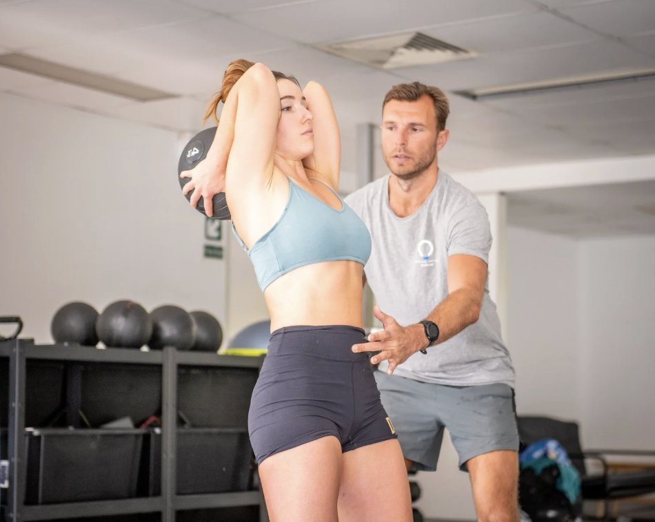

If you’ve been searching:
-
why does my bum ache
-
painful bottom when sitting
-
sore bottom when sitting
-
sharp pain in buttock when walking
-
pain at the top of the buttocks
You’re not overreacting.
Buttock pain is one of the most common complaints we see at Functional Patterns Brisbane, particularly from professionals who sit long hours or active people who can’t understand why their “glutes feel tight all the time.”
The problem is this:
Most online advice reduces buttock pain to a single muscle.
Real mechanics are more complex.
What People Mean by “Pain at the Top of the Buttocks”

When someone says the pain is “right at the top of my bum,” they’re usually pointing to:
-
The sacroiliac (SI) joint region
-
The upper glute attachment near the posterior pelvis
-
The junction between the lumbar spine and pelvis
This area is a load transfer zone.
It’s where forces move from your trunk into your hips during walking.
If that force transfer is inefficient, tissue irritation accumulates here.
That’s why the pain often feels:
-
Deep and dull
-
Sharp when walking
-
Achy when sitting
-
Worse after long periods of inactivity
This is rarely random inflammation.
It’s mechanical stress exceeding capacity.
Why Does My Bum Ache When Sitting?
Search volume tells us sitting-related buttock pain is extremely common.
When you sit:
-
Your pelvis posteriorly tilts
-
Your lumbar spine flexes
-
Your glutes are lengthened and unloaded
-
Your hip internal rotation is reduced
If your body already struggles to rotate and absorb force properly during gait, sitting compresses already overloaded tissues.
Think of it this way:
If your walking pattern doesn’t distribute load through the hips efficiently, that force doesn’t disappear.
It accumulates in passive structures.
Over time, that produces:
-
Painful bottom when sitting
-
Sore buttocks after driving
-
Localised ache at the top of the glutes
Sitting exposes the dysfunction. It doesn’t create it.

Sharp Pain in the Buttock When Walking
If your pain increases when walking or climbing stairs, we’re looking at something different.
Now the issue is dynamic.
Common findings we see in Brisbane assessments:
-
Reduced hip internal rotation under load
-
Excessive external rotation bias
-
Poor pelvic rotation timing
-
Anterior pelvic shift
-
Lumbar extension dominance

When pelvic rotation is delayed or restricted, the upper glute region absorbs rotational forces it shouldn’t.
Instead of force moving smoothly through the transverse plane, it jams.
Compression replaces rotation.
That’s when people report:
-
Sharp pain in buttock when walking
-
Pain on one side only
-
Glute cramping
-
Recurring “tight piriformis”
The body isn’t lacking stretching.
It’s lacking coordinated force sequencing.
Is It Piriformis Syndrome or Sciatica?

Sometimes buttock pain involves nerve sensitivity.
True sciatic nerve compression, however, is less common than Google suggests.
More often we see:
-
Lumbar referral patterns
-
SI joint irritation
-
Deep hip rotator overactivity
-
Poor trunk–pelvis dissociation
The nervous system increases tone in the deep hip muscles to stabilise an unstable system.
Then those muscles get blamed for being “tight.”
That’s backwards reasoning.
Muscles rarely misbehave without a structural reason.
Why Buttock Pain Often Comes With Lower Back Pain
Search data also shows overlap with:
-
lower back pain glute
-
buttock bone pain
-
pain in glute
That’s because the lumbar spine and pelvis operate as a functional unit.
If:
-
Ribcage positioning is poor
-
Breathing mechanics are inefficient
-
Pelvic control is compromised
-
Hip internal rotation is limited
Then the lumbar spine overextends to compensate.
The top of the buttocks becomes a stress junction.
You feel it as glute pain.
But the system-wide pattern is the real driver.
Why Stretching and Foam Rolling Only Help Temporarily

Stretching reduces tone.
Tone reduction feels good.
But tone is protective.
If the structure hasn’t regained mechanical efficiency, the nervous system restores tension quickly.
That’s why people say:
“It feels better after I roll it, but it comes back the next day.”
Pain relief without mechanical change is temporary.
This is where mechanotransduction matters.
Cells adapt to load direction, magnitude, and frequency.
If load is poorly oriented, tissue tolerance decreases.
No amount of passive therapy changes that long-term.
What We Look At During a Buttock Pain Assessment in Brisbane
At Functional Patterns Brisbane in Bulimba, we don’t start by pressing the sore spot.
We assess:
-
Gait mechanics
-
Pelvic rotation timing
-
Hip internal and external rotation under load
-
Ribcage–pelvis relationship
-
Arm swing integration
-
Force transfer through the trunk
We’re looking for where force leaks or compresses instead of rotating.
Because once rotation improves, compression decreases.
Pain often reduces as a downstream effect.
When Should You Seek Help for Buttock Pain?
If you’ve had:
-
Pain at the top of the buttocks lasting more than 2–3 weeks
-
Recurring glute tightness
-
Painful bottom when sitting for work
-
Sharp buttock pain when walking
-
A history of disc bulges or SI joint issues
And you’ve tried:
-
Massage
-
Stretching
-
Generic physio rehab
-
Strength programs that didn’t change symptoms
It’s worth investigating your structural mechanics.
Especially if you’re based in Brisbane and want a more integrated approach.
Buttock Pain Treatment in Brisbane – A Structural Approach

At Functional Patterns Brisbane (45 Michael Street, Bulimba), we specialise in:
-
Chronic lower back pain
-
SI joint irritation
-
Persistent glute pain
-
Postural dysfunction
-
Gait retraining
We don’t isolate muscles.
We retrain the system.
That means rebuilding:
-
Rotational capacity
-
Contralateral coordination
-
Hip internal rotation control
-
Trunk–pelvis integration
When the system distributes force efficiently again, tissue irritation reduces.
That’s mechanical cause and effect.
Book an Assessment in Brisbane
If you’re dealing with persistent buttock pain and want to understand what’s actually driving it:
Book an Initial Assessment at Functional Patterns Brisbane in Bulimba.
Or send us a DM if you’re unsure whether this is the right fit.
We’ll tell you directly.